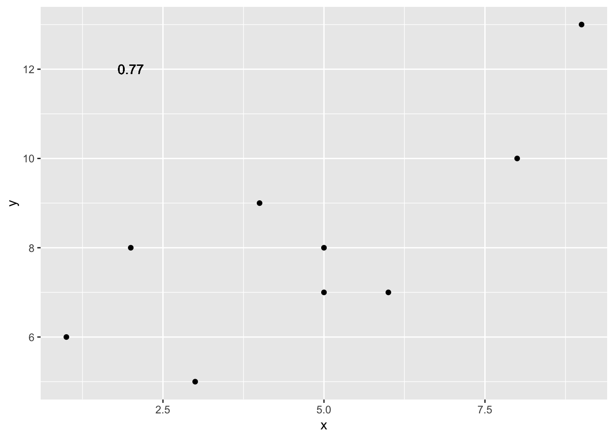
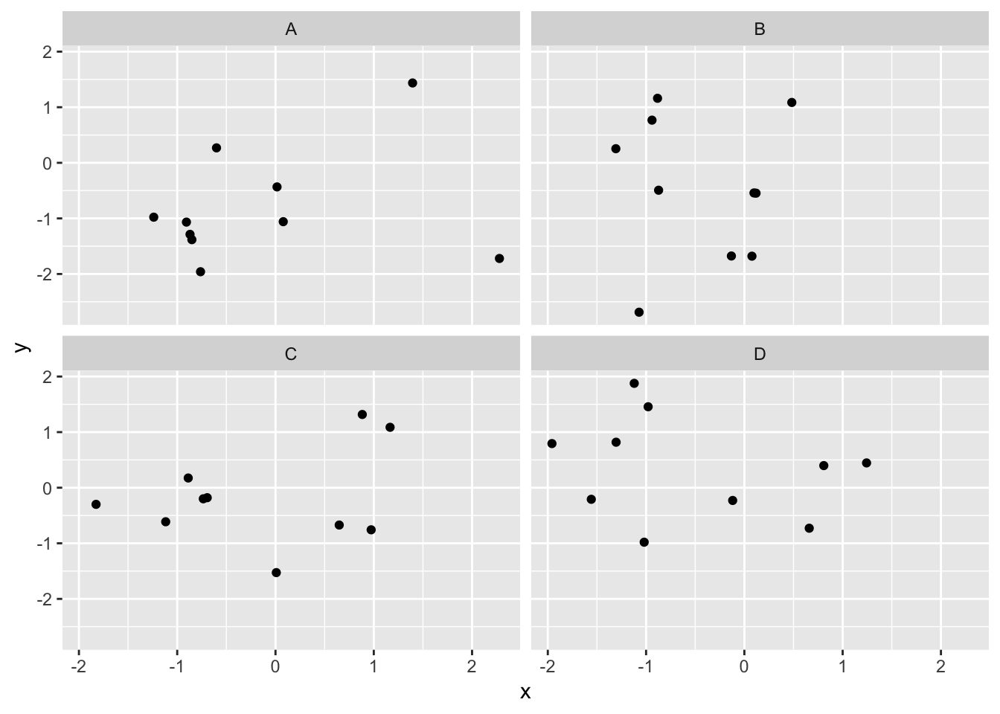
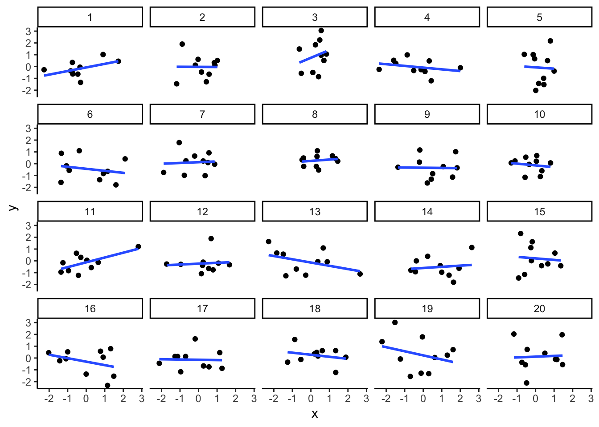
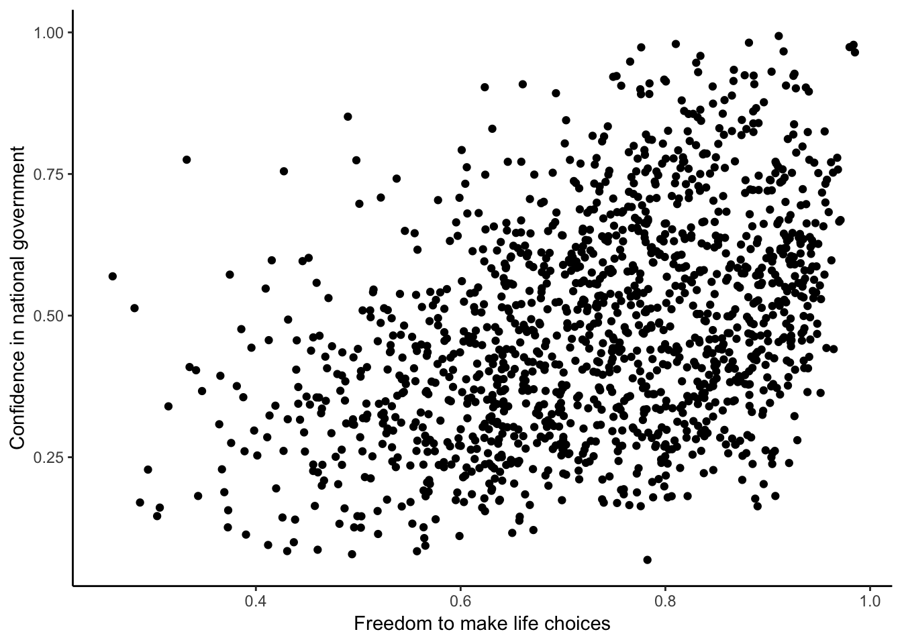
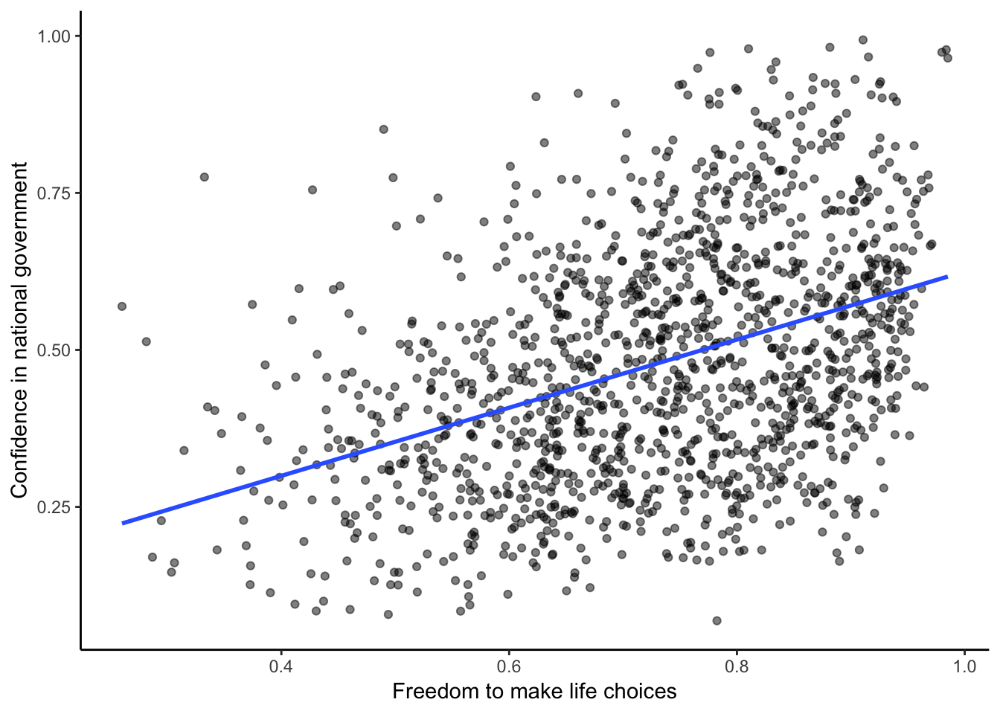
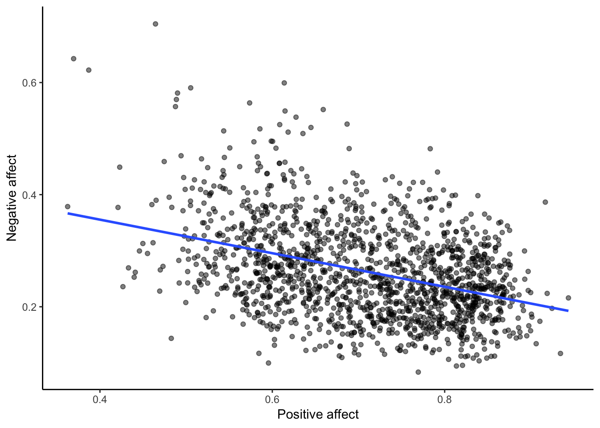

Chapter 3 Lab 3: Correlation
Some inspiring quote —Inspiring Person
3.1 Outline of Problem to solve
Stuff we need to say in general
3.1.1 important things
Other things to say
3.2 R
In this lab we use explore to explore correlations between any two variables, and alsot show how to do a regression line. There will be three main parts. Getting R to compute the correlation, and looking at the data using scatterplots. We’ll look at some correlations from the World Happiness Report. Then you’ll look at correlations using data we collect from ourselves. It will be fun.
3.2.1 cor for correlation
R has the cor function for computing pearson’s r between any two variables. In fact this same function computes other versions of correlation, but we’ll skip those here. To use the function you just need two variables with numbers in them like this:
x <- c(1,3,2,5,4,6,5,8,9)
y <- c(6,5,8,7,9,7,8,10,13)
cor(x,y)## [1] 0.76539Well, that was easy.
3.2.1.1 scatterplots
Let’s take our silly example, and plot the data in a scatterplot using ggplot2, and let’s also return the correlation and print it on the scatterplot. Remember, ggplot2 wants the data in a data.frame, so we first put our x and y variables in a data frame.
library(ggplot2)
# create data frame for plotting
my_df <- data.frame(x,y)
# plot it
ggplot(my_df, aes(x=x,y=y))+
geom_point()+
geom_text(aes(label = round(cor(x,y), digits=2), y=12, x=2 ))
Wow, we’re moving fast here.
3.2.1.2 lots of scatterplots
Before we move on to real data, let’s look at some fake data first. Often we will have many measures of X and Y, split between a few different conditions, for example, A, B, C, and D. Let’s make some fake data for X and Y, for each condition A, B, C, and D, and then use facet_wrapping to look at four scatterplots all at once
x<-rnorm(40,0,1)
y<-rnorm(40,0,1)
conditions<-rep(c("A","B","C","D"), each=10)
all_df <- data.frame(conditions, x, y)
ggplot(all_df, aes(x=x,y=y))+
geom_point()+
facet_wrap(~conditions)
3.2.1.3 computing the correlations all at once
We’ve seen how we can make four graphs at once. Facet_wrap will always try to make as many graphs as there are individual conditions in the column variable. In this case there are four, so it makes four.
Notice, the scatterplots don’t show the correlation (r) values. Getting these numbers on there is possible, but we have to calculate them first. We’ll leave it to you to google how to do this, if it’s something you want to do. Instead, what we will do is make a table of the correlations in addition to the scatterplot. We again use dplyr to do this:
Ok, we are basically ready to turn to some real data and ask if there are correlations between interesting variables…You will find that there are some… But before we do that, we do one more thing. This will help you become a little bit more skeptical of these “correlations”.
3.2.1.4 Chance correlations
As you learned from the textbook. We can find correlations by chance alone, even when there is no true correlation between the variables. For example, if we sampled randomly into x, and then sampled some numbers randomly into y. We know they aren’t related, because we randomly sampled the numbers. However, doing this creates some correlations some of the time just by chance. You can demonstrate this to yourself with the following code. It’s a repeat of what we already saw, jut with a few more conditions added. Let’s look at 20 conditions, with random numbers for x and y in each. For each, sample size will be 10. We’ll make the fake data, then make a big graph to look at all. And, even though we get to regression later in the lab, I’ll put the best fit line onto each scatterplot, so you can “see the correlations”.
x<-rnorm(10*20,0,1)
y<-rnorm(10*20,0,1)
conditions<-rep(1:20, each=10)
all_df <- data.frame(conditions, x, y)
ggplot(all_df, aes(x=x,y=y))+
geom_point()+
geom_smooth(method=lm, se=FALSE)+
facet_wrap(~conditions)+
theme_classic()
You can see that the slope of the blue line is not always flat. Sometimes it looks like there is a correlation, when we know there shouldn’t be. You can keep re-doing this graph, by reknitting your R Markdown document, or by pressing the little green play button. This is basically you simulating the outcomes as many times as you press the button.
The point is, now you know you can find correlations by chance. So, in the next section, you should always wonder if the correlations you find reflect meaningful assocation between the x and y variable, or could have just occured by chance.
3.2.2 Humor Styles Questionnaire
Let’s take a look at some correlations in real data. We are going to look at responses to a questionnaire about happiness that was sent around the world, from the world happiness report
3.2.2.1 Load the data
we load the data into a dataframe.
library(data.table)
whr_data <- fread('data/WHR2018.csv')3.2.2.2 Look at the data
library(summarytools)
view(dfSummary(whr_data))You should be able to see that there is data for many different countries, across a few different years. There are lots of different kinds of measures, and each are given a name. I’ll show you some examples of asking questions about correlations with this data, then you get to ask and answer your own questions.
3.2.2.3 My Question #1
For the year 2017 only, does a countries measure for “freedom to make life choices” correlate with that countries measure for " Confidence in national government“?
Let’s find out. We calculate the correlation, and then we make the scatterplot.
cor(whr_data$`Freedom to make life choices`,
whr_data$`Confidence in national government`)## [1] NAggplot(whr_data, aes(x=`Freedom to make life choices`,
y=`Confidence in national government`))+
geom_point()+
theme_classic()
Interesting, what happened here? We can see some dots, but the correlation was NA (meaning undefined). This occured because there are some missing data points in the data. We can remove all the rows with missing data first, then do the correlation. We will do this a couple steps, first creating our own data.frame with only the numbers we want to analyse. We can select the columns we want to keep using select. Then we use filter to remove the rows with NAs.
library(dplyr)
smaller_df <- whr_data %>%
select(country,
`Freedom to make life choices`,
`Confidence in national government`) %>%
filter(!is.na(`Freedom to make life choices`),
!is.na(`Confidence in national government`))
cor(smaller_df$`Freedom to make life choices`,
smaller_df$`Confidence in national government`)## [1] 0.4080963Now we see the correlation is .408.
Although the scatterplot shows the dots are everywhere, it generally shows that as Freedom to make lifechoices increases in a country, that countries confidence in their national government also increase. This is a positive correlation. Let’s do this again and add the best fit line, so the trend is more clear, we use geom_smooth(method=lm, se=FALSE). I also change the alpha value of the dots so they blend it bit, and you can see more of them.
# select DVs and filter for NAs
smaller_df <- whr_data %>%
select(country,
`Freedom to make life choices`,
`Confidence in national government`) %>%
filter(!is.na(`Freedom to make life choices`),
!is.na(`Confidence in national government`))
# calcualte correlation
cor(smaller_df$`Freedom to make life choices`,
smaller_df$`Confidence in national government`)## [1] 0.4080963# plot the data with best fit line
ggplot(smaller_df, aes(x=`Freedom to make life choices`,
y=`Confidence in national government`))+
geom_point(alpha=.5)+
geom_smooth(method=lm, se=FALSE)+
theme_classic()
3.2.2.4 My Question #2
After all that work, we can now speedily answer more questions. For example, what is the relationship between positive affect in a country and negative affect in a country. I wouldn’t be surprised if there was a negative correlation here: when positive feelings generally go up, shouldn’t negative feelings generally go down?
To answer this question, we just copy paste the last code block, and change the DVs to be Positive affect, nad Negative affect
# select DVs and filter for NAs
smaller_df <- whr_data %>%
select(country,
`Positive affect`,
`Negative affect`) %>%
filter(!is.na(`Positive affect`),
!is.na(`Negative affect`))
# calcualte correlation
cor(smaller_df$`Positive affect`,
smaller_df$`Negative affect`)## [1] -0.3841123# plot the data with best fit line
ggplot(smaller_df, aes(x=`Positive affect`,
y=`Negative affect`))+
geom_point(alpha=.5)+
geom_smooth(method=lm, se=FALSE)+
theme_classic()
Bam, there we have it. As positive affect goes up, negative affect goes down. A negative correlation.
3.2.3 Generalization Exercise
Complete the generalization exercise described in your R Markdown document for this lab.
3.2.4 Writing asignment
Complete the writing assignment described in your R Markdown document for this lab. When you have finished everything. Knit the document and hand in your stuff (you can submit your .RMD file to blackboard if it does not knit.)
3.3 Excel
How to do it in Excel
3.4 SPSS
How to do it in SPSS
3.5 Matlab
How to do it in Matlab